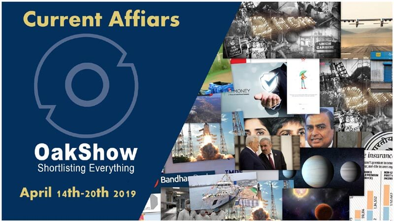

Important News Reports from 14th April 2019-20th April 2019 Shortlisted in One Place|Current Affairs Corner
Posted: OakShow | Date : 16-04-2019
Last Edited : OakShow | Date : 22-04-2019

UN List Bhopal Gas Tragedy as one of the world’s ‘Major Industrial Accident’ in 20th century Source:newsclick.in
The 1984 Bhopal gas tragedy which killed thousands of people is among the world's "major industrial accidents" of the 20th century. The report released by the the UN labour agency International Labour Organization (ILO) said in 1984, at least 30 tons of methyl isocyanate gas, which was released from the Union Carbide pesticide plant in the Madhya Pradesh capital, affected more than 600,000 workers and nearby inhabitants. The Government figures estimate that there have been 15,000 deaths as a result of the disaster over the years. Toxic material remains and thousands of survivors and their descendants have suffered from respiratory diseases and from damage to internal organs and immune systems Among the other nine major industrial disasters after 1919 listed in the report are the Chernobyl and Fukushima nuclear disasters as well as the Rana Plaza building collapse.Click Here to Read News For April 20th,2019
Bhopal gas tragedy among world's major industrial accidents of 20th century: UN
By:Livemint - 20 April,2019
Short Detail
UN List Bhopal Gas Tragedy as one of the world’s ‘Major Industrial Accident’ in 20th century Source:newsclick.in
Indian Navy launches guided missile destroyer INS Imphal
By:The Hindu - 20 April,2019
Short Detail
India Navy launched it's 3rd guided missile destroyer at Mazgaon Docks,Mumbai by Chief of Naval Staff Admiral Sunil Lanba as a part of project 15B, which is aimed at adding state-of-the-art warships to the naval fleet.
The Navy had launched INS Vishakhapatnam, the first Project 15B ship, in April 2015, while the second ship, INS Mormugao, was launched in September 2016. A contract for four destroyers under the Project 15B has been signed.

A Guided Missile Destroyer ‘INS Imphal’ launched by Navy chief Admiral Sunil Lamba Source:ndtvimg.com
Regulatory sandbox should cover big companies, too: Fintech firms
By:Economic Times - 20 April,2019
Short Detail
Explaining the need for the regulatory sandbox, the RBI commented that the regulatory sandbox (RS) usually refers to live testing of new products or services in a controlled or test regulatory environment for which regulators may (or may not) permit certain regulatory relaxations for the limited purpose of the testing.
Norway topped and India ranked 140th in World Press Freedom Index 2019 Source:Your Story
An RS is a controlled environment for commercial testing of new technology with limited regulations and customer exposure.
RBI said that innovation and technologies around credit registry and information, cryptocurrency and assets, trading, ICO and chain marketing services may not be accepted as a part of the sandbox.
Gagandeep Kang is the First Indian Woman Scientist in Royal Society. It ONLY Took 360 Years.
By:News18 - 20 April,2019
Short Detail
Gagandeep Kang, 56 year old, executive director of Translational Health Science and technology Institute at Faridabad, has become the first Indian female scientist to be elected as a Fellow of the royal Society (FRS) in the UK in the 359 year history of the prestigious scientific academy.

The first Indian male scientist, Ardaseer Cursetjee, who was a Parsi shipbuilder and engineer belonging to the Wadia ship building family, was elected to be part of the society in 1841. Almost 180 Years later, Gagandeep Kang, an Indian woman scientist has been elected to the society. Source:latestly.com
Dr. Kang, called India’s vaccine “God Mother”,developed a vaccine against Rota Virus and was first identified by AIIMS, New Delhi in 1985.
The Royal Society of London for Improving Natural Knowledge, commonly known as the Royal Society, has existed for almost 360 years,In these 360 years, it has seen notable fellows like Isaac Newton (1672), Charles Darwin (1839), Michael Faraday (1824), Ernest Rutherford (1903), Albert Einstein (1921), Dorothy Hodgkin (1947), Alan Turing (1951),Francis Crick (1959),etc...
Cygnus Capsule Delivers Delicious Easter Feast to Space Station
By:Geek - 20 April,2019
Short Detail
Cygnus Capsule delivered Easter feast and other supplies including three free-flying robots that were designed to assist the astronauts and 40 Mice for study.
Life, non-life insurance incomes grow rapidly
By:The New Indian Express - 20 April,2019(IST)
Short Detail
Life insurer’s premium income grew 11 per cent in FY19 over the previous year and non-life insurers registered a growth of 13 per cent.
Private firms fare more compared to their public counterparts,As on FY19, there are 23 private life insurers and one state-run player (LIC); non-life industry comprises 25 private players, seven standalone insurers and two public-sector entities.

Life and Non-life insurers witness 11% and 13% rise in premium respectively Source:The New Indian Express

Norway topped and India ranked 140th in World Press Freedom Index 2019 Source:rsf.org
The annual analysis was done by Reporters Without Borders, a Paris-based nonprofit that works toward documenting and combating attacks on journalists around the world. Norway topped the index in third consecutive year and India drops down by two positions (138th rank in 2018) to be ranked 140th out of 180 countries in 2019. The Top 5 contries in the list are:
Click Here to Read News For April 19th,2019
US, India slide down in World Press Freedom Index 2019
By:The American Bazaar - 19 April,2019
Short Detail
Norway topped and India ranked 140th in World Press Freedom Index 2019 Source:rsf.org
The Bottom 5 contries in the list are:
- Turkmenistan(180th)
- North Korea(179th)
- Eritrea(178th)
- China(177th)
- Vietnam(176th)
Bank of Baroda, Srei Equipment Finance tie up for infra equipment loans
By:Livemint - 19 April,2019
Short Detail
Kolkata based Srei Equipment Finance Ltd (SEFL) and India’s second largest state-run lender Bank of Baroda have entered into a co-lending arrangement for infrastructure equipment.
This collaboration will allow both Srei and Bank of Baroda to cooperate and widen their respective markets and customer base.Sourcing of loans will be facilitated through iQuippo, which is a Kanoria Foundation initiative.
iQuippo is a digital marketplace for origination of loans, collection of loan dues, and auction and valuation of equipment.
Two Indian women lawyers named in TIME 100 most influential people
By:Livemint - 19 April,2019
Short Detail
Two Indian women lawyers — Menaka Guruswamy and Arundhati Katju — who spearheaded the legal challenge to strike down Section 377 of the Indian Penal Code,they are at the 9th spot.
The list also includes Reliance Industries Chairman Mukesh Ambani at the 13th spot.
 LGBTQ rights lawyer Arundhati Katju, Menaka Guruswamy among TIME’s 100 most influential people list Source:loksatta.com - 19 April,2019
LGBTQ rights lawyer Arundhati Katju, Menaka Guruswamy among TIME’s 100 most influential people list Source:loksatta.com - 19 April,2019
20 states join pan-India single emergency helpline number 112
By:India Today - 19 April,2019
Short Detail
20 states and Union territories have so far joined a pan-India network of single emergency helpline number '112' on which immediate assistance can be sought by anyone in distress, officials said on Friday (April 19).
 Union Territories and Twenty states join pan-India Single Emergency helpline Number ‘112’ Source:India Today - 19 April,2019
Union Territories and Twenty states join pan-India Single Emergency helpline Number ‘112’ Source:India Today - 19 April,2019
The '112' helpline is an integration of police (100), fire (101) and women (1090) helpline numbers and the project is being implemented under the central government's Nirbhaya Fund.
Indian Navy warships to take part in Chinese fleet review
By:Economic Times - 19 April,2019
Short Detail
Indian Navy ships -- INS Kolkata and INS Shakti -- will arrive in Qingdao on Sunday to participate in the International Fleet Review (IFR),marking the 70th anniversary of founding of the Chinese Navy.
 INS Kolkata and INS Shakti will participate in the Chinese International Fleet Review (IFR) maritime parade in Qingdao,on April 23.Source::defpost.com - 19 April,2019
INS Kolkata and INS Shakti will participate in the Chinese International Fleet Review (IFR) maritime parade in Qingdao,on April 23.Source::defpost.com - 19 April,2019
India had organised an IFR off Visakhapatnam in February 2016 which saw participation of nearly 100 warships from 50 countries.
INS Kolkata is an indigenously built stealth guided missile destroyer equipped with state-of-the-art weapons and sensors to address threats in all dimensions of naval warfare. INS Shakti is a fleet support ship.
Deutsche Bank appoints Kaushik Shaparia as new India head
By:Livemint - 19 April,2019
Short Detail
Deutsche Bank AG has appointed Kaushik Shaparia as the chief country officer for India after its former head Ravneet Singh Gill joined Yes Bank last month. Shaparia currently serves as the Asia Pacific Head of Trade Finance & Cash Management for Corporates for Regional Operations at Deutsche Bank (China) Co., Ltd.
Kaushik Shaparia have been with Deutsche Bank for over 30 years.
Book on Jallianwala Bagh poem Khooni Vaisakhi released in UAE
By:Business Standard - 19 April,2019
Short Detail
English translation of the 100 year old classic Punjabi poem about Jallianwala Bagh massacre, ‘Khooni Vaisakhi’ has been released in Abu Dhabi and was commended by India’s Ambassador to the UAE Navdeep Singh Suri.
It was translated by Mr. Suri whose grandfather, revolutionary poet and novelist Nanak Singh, who was a Jallianwala Bagh survivor, wrote it after witnessing the Jallianwala Bagh massacre on 13th April 1919.
The book was also released in New Delhi on 13 April this year to mark the 100 years of the Jallianwala Bagh massacre that took place in Amritsar.
Saudi government raises India's Haj quota to 2 lakh: Sources
By:Business Standard - 19 April,2019
Short Detail
The Saudi Arabian government has issued a formal order, notifying increase in Indias Haj quota to 2 lakh from 1.75 lakh, about two months after Saudi Crown Prince Mohammed bin Salman gave the assurance to Prime Minister Narendra Modi.
This is the third hike in three consecutive years. In 2017, the quota was increased by 35,000 while last year, it was raised by 5,000 to take the number to 1,75,000.
This time, 2,340 Muslim women from India will also go for Haj without 'Mehram' or male companion, they said.
This year, the GST on Haj pilgrimage has been reduced from 18 percent to 5 percent which will ensure that about Rs 113 crore will be saved by pilgrims during the 2019 Haj.
Airtel Payments Bank partners with Bharti AXA General Insurance for two-wheeler
By:Livemint - 19 April,2019
Short Detail
Airtel Payments Bank has teamed up with Bharti AXA General Insurance for a two-wheeler insurance product offering.
The offering entails personal accident cover, protection against third-party liabilities and inspection-free renewal through a fast, paperless process.
Asian Tea Alliance launched in China
By:The Hindu - 19 April,2019
Short Detail
The Asian Tea Alliance (ATA), a union of five tea-growing and consuming countries, was launched on 19th April,2019 in Guizhou in China.
The members of the alliance are the Indian Tea Association, China Tea Marketing Association, Indonesian Tea Marketing Association, Sri Lanka Tea Board and Japan Tea Association.
Scientists unearth 220 million-year-old dinosaur fossils in Argentina
By:Phys.Org - 19 April,2019(IST)
Short Detail
A site containing the 220-million-year-old fossilised remains of nearly a dozen dinosaurs has been discovered in western Argentina.
They were found at the Ischigualasto National Park.The fossils were laid as “bed of bones” and discovered in September 2018.

Third Transiting Planet in the Kepler-47 Circumbinary System named “Kepler-47d” has been discovered Source:exoplanets.nasa.gov
The debrief of the Indian Navy exercise termed as ‘Sea Vigil’ (held from January 22 to 23) was conducted. The meeting was chaired by Vice Admiral MS Pawar, AVSM, VSM, the Deputy Chief of the Naval Staff (DCNS). It was conducted at the Naval headquarters, New Delhi. After the 26/11 Mumbai attack in 2008, Sea Vigil became the very 1st national-level coastal defence exercise conducted by the Indian Navy. The meeting was conducted for the National Committee for Strengthening Maritime and Coastal Security (NCSMCS).Click Here to Read News For April 18th,2019
Exercise SEA VIGIL
By:New Delhi Times - 18 April,2019
Short Detail
Saudi Arabia to host G20 Leaders' Summit in November
By:ArabianBusiness.com - 18 April,2019
Short Detail
The Saudi capital of Riyadh will host the 15th annual G20 Leaders’ Summit later this year, the state-run Saudi Press Agency announced on Wednesday.
The event is scheduled to take place on November 21 and 22.
The Leaders’ Summit will mark the first time a G20 summit is hosted in the Arab World. The event’s agenda is expected to cover a range of financial economic and social issues, including the digital economy, agriculture, education and labour.
Nepal launches its first satellite NepaliSat-1 from US
By:Business Today - 18 April,2019
Short Detail
Nepal successfully launched its first satellite NepaliSat-1 into space from the US to gather detailed geographical information of the Himalayan nation, evoking unbridled excitement among the people and scientists.
Developed by the Nepalese scientists, NepaliSat-1 satellite was launched from Virginia,United States, according to Nepal Academy of Science and Technology (NAST).
The satellite is equipped with a five megapixel camera to capture Nepal’s topography and a magnetometer to collect data related to the earth’s magnetic field.
India suspends LoC trade with PoK; Home Ministry says trade routes misused
By:Business Today - 18 April,2019
Short Detail
The Home Ministry on April 18th 2019 issued orders to suspend the Line of Control (LoC) trade between Pakistan Occupied Kashmir (PoK) and Jammu and Kashmir effective from April 19 2019.

The trade between J&K and POJK is allowed through two Trade Facilitation centers. First, one located at Salamabad, Uri, district Baramulla and the second one located at Chakkan-da-Bagh, district Poonch. Source:http://jammulinks.news
The reason for the suspension is due to an increase in terror funding, drug trade and fake currencies among other illegal activities by misusing trade routes.
The trade between J&K and POJK is allowed through two Trade Facilitation centers. First, one located at Salamabad, Uri, district Baramulla and the second one located at Chakkan-da-Bagh, district Poonch.
I-T dept proposes new norms for taxing MNCs in India
By:Moneycontrol.com - 18 April,2019
Short Detail
The income tax department on April 18 proposed change in the methodology for taxing multinational companies, including digital firms, having permanent establishment in India by giving weightage to factors like domestic sales, employee strength, assets and user base.
The CBDT(Central Board of Direct Taxation) Committee on 'Profit Attribution to Permanent Establishment (PE) in India' also said MNCs that are incurring global losses or a global profit margin of less than 2 per cent and have operations in India will be deemed to have made a profit of 2 per cent of Indian revenue or turnover and will be taxed accordingly.
In case of digital companies, the weightage will be given to an additional fourth criteria of 'user' base, the report said.
Sri Lanka's first satellite 'Raavana-1' launched
By:Colombo Page - 18 April,2019(IST)
Short Detail
Sri Lanka's first satellite 'Raavana-1' 1.05 kg was launched into space, marking Sri Lanka's entry into the global space age.
The BIRDS-3 satellites from Japan, Nepal, and Sri Lanka were taken to the International Space Station (ISS) as cargo, and boarded onto Antares rocket, which carries the Cygnus cargo spacecraft.
The satellite is expected to orbit 400 km away from earth and will have the lifespan of an estimated 1.5 years.
THE RISE OF TATOOINE: A THIRD PLANET FOR THE BINARY SYSTEM KEPLER-47
By:New Delhi Times - 18 April,2019(IST)
Short Detail
Astronomers have discovered a third planet in the Kepler-47 system, securing the system’s title as the most interesting of the binary-star worlds. Using data from NASA’s Kepler space telescope, a team of researchers, led by astronomers at San Diego State University, detected the new Neptune-to-Saturn-size planet orbiting between two previously known planets.
Third Transiting Planet in the Kepler-47 Circumbinary System named “Kepler-47d” has been discovered Source:exoplanets.nasa.gov

2nd Edition of Indo-Vietnam Bilateral Exercise ‘IN – VPN BILAT EX’ concludes Source:dnaindia.com
Navies of India and Vietnam held a four-day maritime exercise off Cam Ranh Bay in Vietnam from April 13 with an aim to boost operational cooperation. Indian Navy's war ships Kolkata and Shakti participated in the annual exercise, comprising a harbour and a sea phase, the Indian Navy said. INS Kolkata under the command of Captain Aditya Hara and INS Shakti under the command of Captain Sriram Amur participated in the exercise.Click Here to Read News For April 17th,2019
India, Vietnam hold naval exercise
By:Moneycontrol.com - 17 April,2019
Short Detail
2nd Edition of Indo-Vietnam Bilateral Exercise ‘IN – VPN BILAT EX’ concludes Source:dnaindia.com
BoM joins M1Xchange TReDS platform for MSME bill discounting
By:The Hindu BusinessLine - 17 April,2019
Short Detail
Bank of Maharashtra (BoM) has partnered with M1Xchange Trade Receivables Discounting System (TReDS) platform for MSME bill discounting.
TReDS is a digital platform to support micro, small and medium enterprises (MSMEs) to get their bills financed at a competitive rate through an auction where multiple registered financiers can participate.
UPI payments is now live on ETMONEY app
By:Economic Times - 17 April,2019
Short Detail
In an effort to double its monthly user base by the end of the year, ETMONEY, India’s largest app for financial services, has integrated Unified Payments Interface (UPI) as a payment option on the application.

ETMONEY becomes India’s first comprehensive financial services app to integrate with Unified Payment Interface (UPI) Source:medium.com
TReDS is a digital platform to support micro, small and medium enterprises (MSMEs) to get their bills financed at a competitive rate through an auction where multiple registered financiers can participate.
Cholamandalam MS General Insurance gets ISO 31000:2018 certification
By:Business Standard - 17 April,2019
Short Detail
Cholamandalam MS General Insurance Company Ltd (an Indian insurance firm) has been certified with ISO 31000 by TUV India.
ISO 31000:2018 is an international risk management standard. The standard provides guidelines, principles, framework, and a process for managing risk. It can be used by any organization regardless of its size, activity or sector. The application of these guidelines can be customized to any organization and its context.
This ISO certification is valid only for 3 years from April 07, 2019 to April 06, 2022.
Bandhan Bank gets CCI approval for Gruh Finance merger
By:Livemint - 17 April,2019(IST)
Short Detail
Bandhan Bank Ltd has received approval of the Competition Commission of India (CCI) for the proposed acquisition of Gruh Finance.

Bandhan Bank got the approval from CCI to acquire Gruh Finance Source:entrepreneur.com
Gruh Finance, the affordable housing finance arm of HDFC Ltd, was taken over by Bandhan Bank in a share-swap deal in January.As part of the deal, Bandhan Bank has to transfer 14.9% stake to HDFC for merging Gruh Finance with itself.
The share swap ratio for the merger will be 568 shares of Bandhan Bank for every 1,000 shares of Gruh Finance.
The Gruh Finance deal will reduce stake of Bandhan Financial Holdings Ltd in Bandhan Bank to about 61% from the current 82%. HDFC will hold about 15% stake in the merged entity from about 57% in Gruh Finance.
Team led by Indian-American student selected by NASA to measure radiation energy around Earth
By:Your Story - 17 April,2019(IST)
Short Detail
National Aeronautics and Space Administration (NASA) has chosen a team led by an Indian American student, Keshav Raghvan to have its CubeSat which is a mini research satellite to be sent to space to detect cosmic rays.

A team led by 21-year-old Keshav Raghavan is developing its CubeSat to measure radiation around the earth and possibly assist in ongoing research into the origins of our universe. Source:Your Story
21 year old Keshav Raghavan, led the researchers from the Yale Undergraduate Aerospace Association (YUAA) which is among the 16 teams across the country whose CubeSats will be flown into space on missions planned to launch in 2020, 2021 and 2022.
The team’s CubeSat BLAST (Bouchet Low-Earth Alpha/Beta Space Telescope) is named after physicist Edward A Bouchet who was the first African American to receive a Ph.D. in America.
It is a scientific investigation mission to gather scientific information, map the distribution of galactic cosmic radiation across the night sky and will identify as well as count alpha particles and beta particles in the rays, and also measure the radiation energy around Earth.
IIT Roorkee researchers identify new method to detect breast, ovarian cancer
By:The Hindu Businessline - 17 April,2019(IST)
Short Detail
Researchers at the Indian Institute of Technology, Roorkee,Uttarakhand have found a new method to detect breast and ovarian cancer, responsible for one fifth of cancer-related deaths worldwide.The research published in the journal, ‘FASEB Bioadvances’ details the use of whole saliva as a body fluid for early detection of breast and ovarian cancers, as opposed to the traditional method of using blood samples.
The Research team was led by Kiran Ambatipudi

Cabinet approves the Continuation of Phase 4 of (GSLV) Geosynchronous Satellite Launch Vehicle Source:NDTV
ACI Worldwide, a global provider of realtime electronic payment and banking solutions, announced that Canara Bank has successfully rolled out major new functionality to support EMV (Europay, MasterCard and Visa) card acquiring across its ATM network and Aadhaar Authentication, leveraging ACI’s UP Retail Payments solution to achieve market firsts. The functionality developed by ACI and Canara Bank also fastens the process of Aadhaar number linking, which in turn eases KYC (Know Your Customer) compliance at the bank’s branches.Click Here to Read News For April 16th,2019
Canara Bank becomes the first public sector bank in India to meet RBI’s EMV mandate
By:Moneycontrol.com - 16 April,2019
Short Detail

Canara Bank: India’s First Public Sector Bank To Meet RBI’s EMV Mandate Source:Moneycontrol.com
India test fires sub-sonic cruise missile Nirbhay in Odisha
By:Army Technology - 16 April,2019
Short Detail
India has test-fired its first domestically designed and developed long-range sub-sonic cruise missile ‘Nirbhay’ from a test range off the coast of Odisha.

“Nirbhay”, India’s first long range Sub Sonic Cruise Missile successfully test fired off Odisha coast Source:defpost.com
The 1,000km long-range missile, which was developed by Defence Research and Development Organisation (DRDO), was test-fired from launch complex-3 of the Integrated Test Range (ITR) at Chandipur near Balasore.
NDTV reported that Nirbhay is capable of cruising at 0.7 Mach at an altitude as low as 100m and covered the designated target range in 42 minutes and 23 seconds.
It can strike land targets at a distance up to 1000 km at an altitude as low as 100 metre so that missile can avoid detection by enemy radar.
IMF and World Bank Create "Learning Coin" to Educate Staff About Blockchain
By:CoinCodex - 16 April,2019
Short Detail
The International Monetary Fund (IMF) and the World Bank have created “Learning Coin” a quasi-cryptocurrency designed to educate their staff about the principles underlying blockchain technology. According to a Financial Times report, the cryptocurrency will not have any monetary value and will not be accessible outside the two organizations.
Staff will be able to access the cryptocurrency through an app called Learning Coin, which will also feature content such as videos and research produced by the institution. The coins will be earned by completing educational goals, and the developers are testing ways to redeem the coins for certain rewards.
After the testing period, the IMF and the World Bank may use blockchain technology to create smart contracts, fight money laundering, and improve transparency
Mithali Raj named goodwill ambassador of Team India at the Street Child Cricket World Cup
By:Economic Times - 16 April,2019
Short Detail
Indian women's cricket team captain Mithali Raj has been named the goodwill ambassador of Team India at the Street Child Cricket World Cup (SCCWC).

Mithali Raj named as Goodwill Ambassador of Street Child Cricket World Cup 2019 Source:Economic Times
She, alongside Saurav Ganguly and Rajasthan Royals, joins in supporting the team as they gear up for the final match at Lords, just ahead of the ICC Cricket World Cup in May this year.
This is the first cricket world cup for street-connected children and final will be played at Lord’s in London on May 7.
Cabinet Nod To GSLV Phase-4 Continuation Programme Consisting 5 Rockets
By:NDTV - 16 April,2019
Short Detail
The Union Cabinet Monday approved continuation of the ongoing GSLV programme phase-4 consisting of five rocket flights during 2021-2024.The phase four will enable the launch of two-tonne class of satellites for geo-imaging, navigation, data relay communication and space sciences.
Cabinet approves the Continuation of Phase 4 of (GSLV) Geosynchronous Satellite Launch Vehicle Source:NDTV
The at Rs. 2729.13 crore budget includes the cost of five Geosynchronous Satellite Launch Vehicles (GSLVs), essential facility augmentation, programme management, and launch campaign, along with the additional funds required for meeting the scope of the ongoing programme.
Cabinet approves MoUs with five countries
By:Free Press Journal - 16 April,2019
Short Detail
MoU signed in May 2018 with Brazil to collaborate on innovation in science and technology besides biotechnology education, training and research.
The Cabinet was apprised about an MoU under which the Department of Posts will issue postage stamps on Queen Hur Hwang-ok of South Korea by 2019-end
An agreement was signed in March 2019 between India and Denmark for cooperation in the field of renewable energy with focus on offshore wind energy
The government has decided to extend the duration of the New Urea Policy from April 1 this year till further orders to ensure smooth supply of nutrients to farmers.
The cabinet approved the ongoing GSLV continuation programme phase 4 consisting of five GSLV flights during 2021-24.(For more about this perfticular MoU check the above news.
Jailed Reuters Reporters Wa Lone and Kyaw Soe Oo Receives Pulitzer Prize for Revealing Rohingya Muslims Crisis in Myanmar
By:CNN - 16 April,2019
Short Detail
Jailed Reuters journalists Wa Lone and Kyaw Soe Oo won a Pulitzer Prize for international reporting for uncovering Rohingya killings in Myanmar's Rakhine state.

Jailed Reuters journalists Wa Lone and Kyaw Soe Oo to receive 2019 UNESCO/Guillermo Cano Press Freedom Prize 2019 Source:rappler
Coast Guard patrol ship Veera commissioned
By:The New Indian Express - 16 April,2019
Short Detail
Chief of Army Staff General Bipin Rawat on Monday commissioned the Indian Coast Guard Ship Veera at a ceremony held at Naval Jetty at the dockyard in the city. Veera, third in the series of offshore patrol vessels of the Coast Guard, was built by L&T at its shipbuilding facility at Kattupalli in Chennai.

Indian Coast Guard offshore patrol vessel ‘Veera’ commissioned by General Bipin Rawat Source:The New Indian Express
It is commanded by Commandant Girish Datt Raturi and managed by 12 officers and 94 men.
A ship of this class has been designed and constructed in India for the first time as part of ‘Make in India’ concept of the Central government.
NASA's TESS Exoplanet Mission Finds 1st Earth-Size Alien World
By:Space.com - 16 April,2019
Short Detail
The Transiting Exoplanet Survey Satellite (TESS) has discovered an Earth-sized planet, HD 21749b and a “sub-Neptune” world, revolving around the star, HD 21749. The star lies 53 light-years from Earth.

Artist's illustration of HD 21749c, the first Earth-size planet found by NASA's Transiting Exoplanets Survey Satellite, as well as its sibling, HD 21749b, a warm sub-Neptune-sized world.(Image: © Robin Dienel, courtesy of the Carnegie Institution for Science) Source:Space.com
TESS was launched to Earth orbit in April 2018 on a SpaceX Falcon 9 rocket.
Tool ‘Planet Finder Spectrograph’ (PFS) on the ‘Magellan II telescope’ in Chile helped to confirm the planetary nature of the TESS signal and measure the mass of HD 21749b.
HD 21749b is about 23 times heavier and 2.7 times wider than Earth. It is gaseous, has a substantial atmosphere but not as puffy as Uranus and Neptune. HD 21749b has an orbital period of 36 Earth days.This one possibly have a surface temperature of 300 degree.
ICC partners with UNICEF to deliver ‘One Day for Children’ at Men’s Cricket World Cup 2019
By:International Cricket Council - 16 April,2019
Short Detail
#OneDay4Children will use the power and reach of the ICC Men’s Cricket World Cup 2019 to help children learn play and be healthy. The money raised will support UNICEF’s work for children in cricket playing nations across the world

ICC partners with UNICEF to deliver ‘#OneDay4Children’ at Men’s Cricket World Cup 2019 Source:International Cricket Council
#OneDay4Children ambassador Nasser Hussain and England all-rounder Chris Woakes, launched the tournament-wide campaign focussed on bringing the world of cricket together as one team to help build a better world for every child.
There will be #OneDay4Children activity throughout all 48 matches of the event, peaking with a day of celebration during the England v India game on 30 June at Edgbaston. The money raised will support UNICEF’s work in cricket playing nations to help children learn to play and be healthy.
NOTE:The tournament will run from 30 May to 14 July.
NASA Grants Elon Musk's SpaceX $69 Million Contract To Fly Spacecraft Into Asteroid: What's The Objective Of DART Mission?
By:Tech Times - 16 April,2019
Short Detail
NASA recently awarded SpaceX a $69 million government contract to deflect incoming asteroids that are on a collision course with the planet.
According to NASA, a Falcon 9 rocket will head into space in June 2021 to blast incoming asteroids in the future.
The main goal of the DART mission is to deflect possible asteroid collisions with Earth by using a kinetic impactor.
Apart from the DART mission, scientists are also looking into the possibility of using self-driving spacecraft to prevent asteroid collisions.The Hera spacecraft,one of such spacecrafts is built by the European Space Agency and is part of a larger initiative known as the Asteroid Impact and Deflection Assessment (AIDA) mission.
Lakes filled with liquid methane spotted on Saturn’s moon Titan
By:The Hindu - 16 April,2019
Short Detail
Scientists Used the data obtained from NASA’s Cassini spacecraft before that mission ended in 2017.
Titan and Earth are the solar system’s two places with standing bodies of liquid on the surface. Titan boasts lakes, rivers and seas of hydrocarbons: compounds of hydrogen and carbon like those that are the main components of petroleum and natural gas.
Titan, Saturn’s largest moon has methane rain that can fill lakes as much as 330 feet deep.
Telecom operator Bharti Airtel and the FICCI Ladies Organisation (FLO) Sunday launched a safety app – My Circle - aimed at aiding women in event of distress or an emergency situation, by sending an SOS alert. The carrier-agnostic app can be installed by both Airtel and non-Airtel customers. Acoording to the officials,“My Circle app enables women to send SOS alerts to any five of their family or friends in 13 languages including English, Hindi, Tamil, Telugu, Malayalam, Kannada, Marathi, Punjabi, Bangla, Urdu, Assamese, Oriya, and Gujarati”.Click Here to Read News For April 15th,2019
Airtel, FICCI Ladies Organisation launch women’s safety app, My Circle
By:Hindustan Times - 15 April,2019
Short Detail
Airtel, FLO Collaborate to Launch MyCircle App for Women's Safety Source:My Circle,Google Playstore

Need to change development paradigm, aim for climate resilient development: Venkaiah Naidu
By:Moneycontrol.com - 15 April,2019
Short Detail
Vice President M. Venkaiah Naidu addresses at the 4th Resilient Cities Asia-Pacific Congress 2019, organised by the International Council for Local Environmental Initiatives, in New Delhi on April 15, 2019.
Local governments in the Asia Pacific region is the main target of the event.
The three-day event is being hosted by the South Delhi Municipal Corporation in association with UN (ICLEI – Local Governments for Sustainability).
This event is being organised in India for the first time and 31 countries are taking part in this programme that was inaugurated by the vice president Venkaiah Naidu, the SDMC said in a statement.
The Resilient Cities Asia Pacific (RCAP) Congress 2019 is offering cities and regions from Asia-Pacific a variety of innovative solutions that build resilience to climate change at the sub-national level.
India to partner with Japan and UAE to set up two projects in Africa
By:Livemint - 15 April,2019
Short Detail
India will build a cancer hospital in Kenya in collaboration with Japan, it will partner with the UAE to set up an Information and Communications technology (ICT) centre in Ethiopia.
This is a counter to China’s ambitious Belt and Road Initiative (BRI), China’s investments in Africa between 2005 and 2018 at more than $220 billion.
Bajaj Finserv launches industry first proposition to pay electricity bill on EMIs
By:Business Standard - 15 April,2019
Short Detail
Bajaj Finserv through its lending arm Bajaj Finance Ltd. has launched a unique proposition through its campaign #BijliOnEMI wherein customers buying air-conditioners on EMI can avail an Insta Credit loan in their Bajaj Finserv Wallet which they can use to pay their electricity bills on EMI.

The world’s largest airplane a Stratolaunch behemoth has made its first test flight in California. Source:CNN
Stratolaunch, the company founded in 2011 by the late Microsoft co-founder Paul Allen, conducted the first test flight of the world's largest plane. In simple terms, the Stratolaunch 'Roc' aircraft is a giant flying launch pad, designed to hurtle satellites into low Earth orbit. It aims to offer the military, private companies and even NASA itself a more economical way to get into space. It has two fuselages and six Boeing 747 engines and is designed to carry into space, and drop a rocket that would in turn ignite to deploy satellites. The wingspan of this airplane is 117 meters which is about 1.5 times that of an Airbus A380,litrally more than that of a typical football field.
India will be the guest of honour at the 29th edition of the Abu Dhabi International Book Fair that will be held in the UAE capital from April 24 to 30, it was announced on Sunday. The National Book Trust of India will lead a 100-strong delegation comprising celebrated authors, publishers, literary figures and artists; Smitha Pant, Deputy Chief of Mission at the Indian embassy said at a press conference.
Palestinian President Mahmoud Abbas accepted the oath of office from the new 24-member cabinet headed by Prime Minister Mohammed Ishtayeh. Mohammed Ishtayeh is a veteran peace negotiator and harsh critic of Gaza’s Hamas rulers. The new 24 member cabinet replaces a technocratic government, which was formed by Rami Hamdallah in 2014.
Lewis Hamilton won the 1,000th Formula One grand prix on Sunday after grabbing the lead from Mercedes team-mate Valtteri Bottas at the first corner and powering to victory in blustery Shanghai. Ferrari’s Sebastian Vettel,Max Verstappen of Red Bull and Charles Leclerc in the second Ferrari had finished 3rd,4th and 5th respectively.Click Here to Read News For April 14th,2019
The world's largest plane just flew for the first time
By:Khaleej Times - 14 April,2019
Short Detail
The world’s largest airplane a Stratolaunch behemoth has made its first test flight in California. Source:CNN
India to be the guest of honor at Abu Dhabi book fair
By:Khaleej Times - 14 April,2019
Short Detail
Abbas swears in new government, hostile to Hamas
By:World Israel News - 14 April,2019
Short Detail

Prime Minister Mohammed Ishtayeh sworn as New Palestinian government Source:World Israel News
Lewis Hamilton wins Chinese Grand Prix in Mercedes one-two
By:The Hindu BusinessLine - 14 April,2019
Short Detail

Lewis Hamilton clinched Formula One’s 1000th race title Source:clarin.com
Manipur’s Meena Kumari Maisnam clinches gold in Boxing World Cup
By:thenortheasttoday.com - 14 April,2019
Short Detail
India bagged a Gold and two Silver medals at the Boxing World Cup at Cologne in Germany yesterday. Meena Kumari Maisnam claimed the gold medal in the 54 kg category by defeating Thailand’s Machai Bunyanut in the Final.

Meena Kumari Maisnam clinched Gold medal at Cologne Boxing World Cup 2019 Source:thenortheasttoday.com
Sakshi in 57 kgs and Pwilao Basumatary in 64 kgs had to settle for Silver medals after they lost their final bouts to Ireland’s 2018 Commonwealth Games silver medallist Carly McNaul and English pugilist Paige Murney respectively.
Boxing World Cup 2019 was held in Cologne, Germany.
Oil Eating Bacteria Discovered in Mariana Trench
By:Technology Networks - 14 April,2019
Short Detail
Scientists from the University of East Anglia,England together with researchers from the China and Russia have discovered a unique oil eating bacteria in the deepest part of the Earth’s oceans – the Mariana Trench.
The unique oil-eating bacteria could help in sustainable ways of cleaning up man-made oil spills. The research has been published in the journal ‘Microbiome‘.

Unique oil-eating bacteria found in world's deepest ocean trench, Mariana Trench Source:sciencedaily.com and University of East Anglia
The research study was led by Xiao-Hua Zhang of the Ocean University, China.
According to the researched analysis, these oil-eating microbes majorly feed on compounds similar to those in oil and then use it for fuel. They are mostly abundant at the bottom of the Mariana Trench.
Hockey India congratulates BK Nayak on his appointment as Chair of FIH Health and Safety Committee
By:Pragativadi - 14 April,2019(IST)
Short Detail
Odisha’s Col (Dr) Bibhu Kalyan Nayak, a native of the temple City, became the first Indian to be appointed Chair of International Hockey Federation (FIH) Health and Safety Committee by the world governing body. He will serve a two-year cycle lasting until 2020.
He had worked as the Medical Officer for the 2018 Men’s World Cup and chief team physician of Indian Contingent in Rio 2016 Paralympic Games.
Inform us If we've omitted any important news here